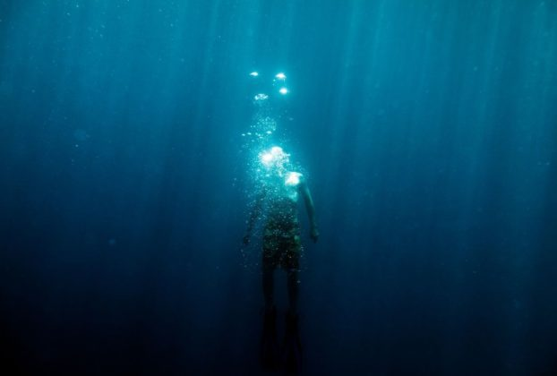

¿Qué es la talasofobia?
La talasofobia es un tipo de fobia en la que se tiene un miedo excesivo y recurrente a las grandes masas de agua, especialmente al océano. Se engloba dentro de los trastornos conocidos como “fobias específicas”, es decir, fuertes miedos a un elemento en concreto que provocan ansiedad y pensamientos irracionales.
Anuncios
En el caso de la talasofobia, existen varias versiones. La más común de ellas es el miedo a lo que pueda esconderse debajo de la superficie del agua. Así, las personas que padecen este trastorno tienen un terror irracional a que una criatura marina o acuática pueda salir del fondo para atacarles.
Otra versión es la que provoca un gran miedo a quedarse atrapado en el agua. Las personas que la padecen odian estar en medio del océano o de un lago, ya que piensan que se van a hundir o que no serán capaces de volver a la orilla.
Esta fobia no se encuentra entre las más comunes, y no suele ser especialmente preocupante. Sin embargo, si sus síntomas son muy severos o le impiden a la persona llevar una vida normal, es recomendable recibir algún tipo de tratamiento psicológico.

Síntomas de la talasofobia
A continuación veremos algunos de los síntomas más comunes de la fobia a las grandes masas de agua.
Ansiedad
Cuando una persona con talasofobia se encuentra cerca de aguas profundas, su primera reacción es la ansiedad. Esto se traduce en varias sensaciones desagradables. Puede sentir, por ejemplo, presión en el pecho, dificultad para respirar, o sensación de mareo.
Si la ansiedad se vuelve muy intensa, la persona puede llegar a experimentar un ataque de pánico. Durante el mismo, el afectado cree que se va a morir, o que va a perder el control de manera irreversible. Los síntomas del ataque de ansiedad son muy desagradables, pero por lo general no son peligrosos.
Pensamientos obsesivos
Frente a la visión del agua, la persona comenzará a tener pensamientos obsesivos recurrentes e irracionales. Así, por ejemplo, comenzará a pensar que algo va a salir de las profundidades para atacarla. Otra versión de esto es la de que se va a hundir sin remedio.
El individuo sabe perfectamente que estos pensamientos no son racionales. Sin embargo, no puede librarse de ellos, y le provocan mucha ansiedad.
Anuncios
Por lo general, estas creaciones mentales van aumentando en intensidad cuanto más tiempo está la persona en contacto con el agua.
Evitación
Debido a las sensaciones tan desagradables que experimenta al encontrarse cerca de una gran masa de agua, el afectado trata de evitar el contacto con ellas en la medida de lo posible. Así, siempre que pueda, tratará de no acercarse al mar ni a otros elementos similares como lagos o embalses.
Para una persona que viva en una ciudad de interior y no tenga que viajar a la costa, esto puede no suponer ningún problema. Sin embargo, si la vida del individuo le hace estar en contacto con el mar, la talasofobia puede impedirle funcionar adecuadamente en su día a día.
Causas de la talasofobia
A nivel social, existen muchos mitos e historias sobre los peligros del mar. Películas como “Titanic”, “Tiburón” o “Poseidón” muestran al océano como algo aterrador, que no podemos controlar. Según algunos expertos, estas actitudes pueden ir calando en nuestro subconsciente sin que nos demos cuenta.